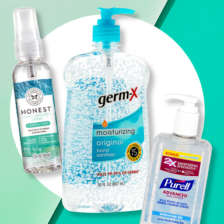
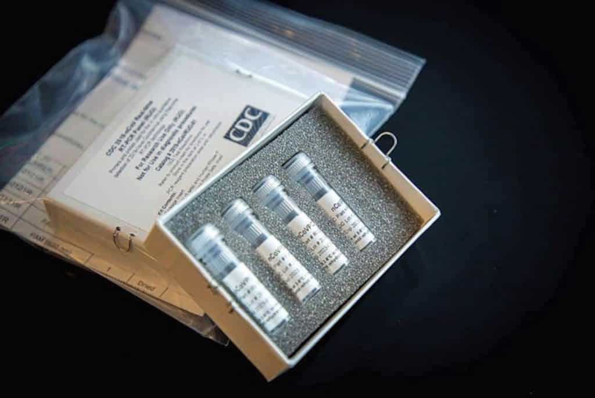
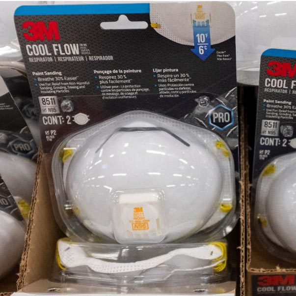

Due to a flood of scams relating to the COVID-19 pandemic, The Federal Emergency Management Agency has responded to these frequently asked questions.
"I Got A Call, Text, Or Email Saying I Could Get Financial Help. Is It Legitimate?"
“There have been reports that scammers are pretending to be the government, contacting people by robocall, text message, email and other outreach. These scammers say they can get people financial help during the COVID-19 pandemic, and then ask for money or personal information, like your Social Security, bank account or credit card number. This is a scam.
Don’t trust anyone who offers financial help and then asks for money or personal information. Federal and local disaster workers do not solicit or accept money. The Department of Homeland Security, FEMA, U.S. Health and Human Services and the Centers for Disease Control staff never charge for disaster assistance.
The Federal Trade Commission scams page has tips to help you avoid scams online, on the phone, by text and through email. If you see a scam, please report it to the Federal Trade Commission: ftc.gov/complaint.”
"I’m On Medicare, And Someone Offered Me A COVID-19 Test If I Provide My Medicare Information. Should I Accept?"
"If you receive any calls like this, please know that it is a scam to get your private personal information. Beneficiaries are being targeted in a number of ways, including telemarketing calls, social media platforms, and door-to-door visits. Do not give out your Medicare, Medicaid, or Social security numbers. And be cautious about any unsolicited requests for your personal information. If you think you need to be tested for the Coronavirus, please call your doctor, who can advise you on what tests you may need."
"Is The Government Sending Everyone Money?"
A stimulus package has been passed by Congress to help Americans in need. As information becomes available, it will be updated on www.coronavirus.gov. Unfortunately, scammers are using COVID-19 to take advantage of people. Don’t trust anyone who tells you they can get you money now. The Federal Trade Commission (FTC) has more information about government scams, including COVID-19 scams.
The Federal Trade Commission has also gotten involved in the matter. They have posted these tips to help consumers avoid being the victims of various scams that are circulating.
Hang up on robocalls. Don’t press any numbers. Scammers are using illegal robocalls to pitch everything from scam Coronavirus treatments to work-at-home schemes. The recording might say that pressing a number will let you speak to a live operator or remove you from their call list, but it might lead to more robocalls, instead
Ignore online offers for vaccinations and home test kits. Scammers are trying to get you to buy products that aren’t proven to treat or prevent the Coronavirus disease 2019 (COVID-19) — online or in stores. At this time, there also are no FDA-authorized home test kits for the Coronavirus. Visit the FDA to learn more.
Fact-check information. Scammers, and sometimes well-meaning people, share information that hasn’t been verified. Before you pass on any messages, contact trusted sources. Visit What the U.S. Government is Doing for links to federal, state and local government agencies.
Know who you’re buying from. Online sellers may claim to have in-demand products, like cleaning, household, and health and medical supplies when, in fact, they don’t.
Don’t respond to texts and emails about checks from the government. The details are still being worked out. Anyone who tells you they can get you the money now is a scammer.
Don’t click on links from sources you don’t know. They could download viruses onto your computer or device.
Watch for emails claiming to be from the Centers for Disease Control and Prevention (CDC) or experts saying they have information about the virus. For the most up-to-date information about the Coronavirus, visit the Centers for Disease Control and Prevention (CDC) and the World Health Organization (WHO).
Do your homework when it comes to donations, whether through charities or crowdfunding sites. Don’t let anyone rush you into making a donation. If someone wants donations in cash, by gift card, or by wiring money, don’t do it.
As the Pandemic Continues, the World Tries to Meet the Demand for Hand Sanitizer
Story by: GreyLight Media
Date: 04-06-2020

Various brands of alcohol-based hand sanitizers
In late February data from Adobe Analytics showed that demand for hand sanitizers in the U.S. spiked by 1,400% between December and January. According to Nielsen, hand sanitizer purchases in the United States were up 73% during the four weeks until February 22. Online stocks of hand sanitizer sold out at Amazon, Walgreens and Walmart.
Between February 22 and February 29 the total U.S. dollar sales of hand sanitizer increased by 313.4%.
On March 5, a 12-ounce Purell bottle, which typically retails for around $4.50, was selling for $50 a bottle on Amazon. Amazon has taken action against price gouging and has suspended many sellers for overcharging.
Now, the State of New York is trying to combat this problem by producing its own hand sanitizer called “New York State Clean” with the use of prison labor.
New York Governor Andrew Cuomo announced that the state is rolling out its own line of hand sanitizer that is 75% alcohol, with a plan to produce 100,000 gallons per week.
The hand sanitizer is being produced at the Great Meadow Correctional Facility in Washington County, New York through a business called Corcraft, which describes itself as “an entity within the NYS Department of Corrections and Community Supervision.”
Cuomo stated it costs $6.10 to produce one gallon of New York’s hand sanitizer and it will be provided at no cost to governmental agencies, school districts, the MTA and prisons.
Online sellers have dealt with their own difficulties among the crisis.
eBay banned the sales of both face masks and hand sanitizer, saying that the prices on some listings may be illegal. Amazon is still allowing third-party sales of hand sanitizer, although they are taking down listings that price gouge or make “deceptive claims.” Facebook Marketplace announced a temporary ban on sales of medical face masks last week. Hand-sanitizer listings are still allowed, but with the same restrictions as Amazon.
Two Tennessee men who hoarded over 17,000 bottles of hand sanitizer have donated their stockpile amid backlash and a price gouging investigation.
Anheuser-Busch has joined craft distilleries that started producing hand sanitizer. While currently many distilleries are losing sales of their traditional spirits because of the closing of restaurants and bars, many are giving away hand sanitizer for free.
“This is not an economic lifeline for distilleries,” said Brad Plummer, a spokesman for the American Distilling Institute and editor in chief of Distiller Magazine. “We live in these communities. We know these people. We’re watching them suffer, and we have the ability to help.”
According to Mr. Plummer, early responses to an industry survey suggested that three-fourths of the nation’s 2,000 craft distilleries were considering making sanitizer..
The U.S. Food and Drug Administration has issued two guidance documents to communicate its policy for the temporary manufacture of certain alcohol-based hand sanitizer products. These guidance documents will be in effect for the duration of the public health emergency declared by the Secretary of Health and Human Services (HHS) on January 31, 2020.
“We are aware of significant supply disruptions for alcohol-based hand sanitizers. Many manufacturers make hand sanitizers, and several have indicated that they are working to increase supply,” said FDA Commissioner Stephen M. Hahn, M.D. “In the meantime, these guidances provide flexibility to help meet demand during this outbreak. We will continue to work with manufacturers, compounders, state boards of pharmacy and the public to increase the supply of alcohol-based hand sanitizer available to Americans.”
The guidance Temporary Policy for Preparation of Certain Alcohol-Based Hand Sanitizer Products During the Public Health Emergency (COVID-19), is immediately in effect and says the agency does not intend to take action against manufacturing firms that prepare alcohol-based hand sanitizers for consumer use and for use as health care personnel hand rubs during this ongoing public health emergency.
The second guidance, Policy for Temporary Compounding of Certain Alcohol-Based Hand Sanitizer Products During the Public Health Emergency, is in effect for the temporary compounding of certain alcohol-based hand sanitizers by pharmacists in state-licensed pharmacies or federal facilities and registered outsourcing facilities. Compounding is generally a practice in which a licensed pharmacist or physician combines, mixes, or alters ingredients of a drug to create a tailor-made medication. The temporary policy outlined by the agency does not require compounders to obtain a patient-specific prescription.
According to some in the distilling industry, the FDA could take another step to help them produce the much needed hand sanitizer.
"We are ready willing and able to produce massive amounts of hand sanitizer," says Matt Dogali, the President and CEO of the American Distilled Spirits Alliance. The FDA, along with the Alcohol Tax and Trade Bureau, he says, "have guidance documents about how we make our hand sanitizer." And that guidance requires a denaturant—an additive meant to make the alcohol unpalatable if, say, a child tried to drink it.
The denaturant the FDA currently requires would terribly impact their production lines. "We make consumable alcohol products," he says. "And if we introduce a denaturant into our lines, it renders them useless for future alcohol production barring extreme cleaning measures, because we cannot have any remnant of the denaturant in our lines, and then sell a consumable product."
The FDA's requirements have nothing to do with making hand sanitizer work; hand sanitizer doesn't require a denaturant to be effective at killing germs. In fact, the World Health Organization's (WHO) guidelines for producing it don't include a denaturant. The outlet
parade.com is maintaining a current list of distillers that are now producing alcohol-based hand sanitizer.
A Short Overview of the Rapidly Changing COVID-19 Tests
Story by: GreyLight Media
Date: 04-03-2020

A diagnostic test for SARS-CoV-2 created by the CDC
In recent months some dramatic changes have been made in an effort to deal with the coronavirus pandemic that is now affecting at least 171 countries. One of the most important tools in fighting the pandemic is being able to identify who is infected with accessible and effective testing. After early on struggles within the CDC, such as botched test kits and a limited ability to process the samples, a decision was made that would rapidly increase testing availability. That decision was simple, remove FDA barriers to allow private industry and local governments to participate in the fight against COVID-19. On January 27th, the FDA released a statement to encourage groups creating COVID-19 to seek emergency use authorization. On February 29th, a new policy was issued by the FDA to expedite the availability of diagnostics. Among many things, this policy allowed commercial labs to validate their tests along FDA guidelines and begin using them on patients before an Emergency Use Authorization (EUA) has been issued. The labs are required to notify the FDA within 15 days and submit a completed EUA request.
Despite the slow start as we fast forward to late March, the USA has now done more COVID-19 tests than any other country and the options for testing along with availability continue to increase. A few of the notable developments are as follows. On March 12th, the FDA issued an EUA to Roche Molecular Systems for its test within 24 hours of receiving the application. This is the first commercially distributed diagnostic test to receive an EUA during the COVID-19 outbreak. The FDA did not deny Roche pre-positioning its test so that labs could be ready to initiate testing immediately upon EUA. This test created by Roche was able to give results ten times faster than the test that had been implemented by the CDC.
On March 20th, the FDA issued an EUA for the first point-of-care COVID-19 diagnostic test. This test, (Xpert Xpress SARS-CoV-2 test, created by Cephid) is capable of delivering results within 45 minutes and is a much-needed addition to testing capacity in the US. Cephid’s test was designed to be processed on their automated GeneXpert System, which is available world wide with approximately 23,000 units in use across the globe.
The most recent developments in testing include a test that can be done by the patient and would return a positive result within 5 minutes or a negative result within 13 minutes. The test, produced by Abbott Diagnostics Scarbrough, Inc. will first be rolled out in Detroit, MI which has become one of the major hotspots in the COVID-19 crisis. The test is currently being used to test the city’s first responders, healthcare workers and firefighters. Abbott’s test will run on the existing ID NOW platform, a portable machine around the size of a small toaster, that according to Abbott, is the most widely available molecular point-of-care testing platform in the United States today and is used to test for illnesses like flu and strep. Abbott hopes to increase production of these kits to make 50,000 per day.
US Comfort and US Mercy Sent to New York and LA to Increase Hospital Capacity
Story by: GreyLight Media
Date: 03-30-2020
US Mercy docked in Manhattan after the September 11, 2001 terrorist attacks
The two US Navy Hospital ships “USNS Comfort” and “USNS Mercy” have been deployed to Manhattan and San Diego to increase hospital capacity amidst the COVID-19 pandemic. The ships will be used to treat patients who are not infected with COVID-19, in order to free beds in land-based hospitals to treat COVID-19 patients while keeping the groups separate. During the departure of the US Comfort from Norfolk, Virginia,
President Trump made statements.
"This great ship behind me is a 70,000-ton message of hope and solidarity to the incredible people of New York, a place I know very well, a place I love.”
"As the USNS Comfort weighs anchor and leaves Norfolk Naval Station, home to the most powerful fleet in the world, she does so to embark on one of the most important assignments of her storied career—serving the American people in this great hour of need," the White House statement said.
More than 1,200 medical personnel working the ship "will bring to bear the skills, care, and compassion needed to wage this fight against an invisible enemy," the White House said in a statement.
"These doctors, nurses, anesthesiologists, x-ray technicians, orderlies, and other medical staff will augment and support New York City’s medical community and conserve hospital capacity by treating some non-COVID-19 patients aboard the USNS Comfort," the White House said.
The USNS Comfort had been undergoing planned maintenance, but was rushed back into service to aid NYC which is now the epicenter of the nation's outbreak. It is scheduled to arrive in Manhattan a week after its sister ship, the USNS Mercy arrived in Los Angeles to support efforts on the West Coast.
The nearly 900-foot-long USNS Comfort, which was once an oil tanker, is a floating trauma hospital designed to care for service members who've been in combat.
The ship has 12 operating rooms as well as radiology suites and a CT scanner. It also has ICU beds, a lab and a pharmacy
Speaking with New York Governor Andrew Cuomo Saturday morning, Trump talked about the response and also approved his request for four additional medical response sites in Brooklyn, Queens, Staten Island and the Bronx that will have 4,000 additional beds, Cuomo said earlier. The USNS Comfort should arrive in New York Harbor on March 30th with roughly 1,000 beds.
"We are marshalling the full power of the American nation — economic, scientific, medical and military — to vanquish the virus," Trump said at today's departure ceremony. "I'm here to express my profound gratitude to the dedicated service members who will soon be on the front lines of this fight."
Mark Esper, The Defense Secretary said the department is focused on three priorities. "We are committed to taking all necessary measures to safeguard the well-being of our most important resource: our people," the secretary said.
The second priority is remaining prepared to carry out core national security missions and to defend the United States against any threat.
Third, he said, DOD is "continuing to support President Trump's whole-of-government, whole-of-nation response to the coronavirus."
"For several weeks, the Department of Defense has been surging personnel, capabilities and equipment to help slow the spread of the virus," Esper said. "Thousands of National Guard troops are mobilized."
US officials and US Companies work to fix the current shortage of N95 masks
Story by: GreyLight Media
Date: 03-27-2020

Highly sought after N95 respirators
The Covid-19 pandemic, which experts believe originated in Wuhan, China during the late part of 2019 is presenting many difficulties for the world. One of the top challenges is overcoming the stress on supply chains that provide personal protective equipment (PPE) to healthcare professionals. When it comes to a respiratory disease that can be spread by airborne droplets (such as Covid-19), N95 respirators become a crucial piece of gear to protect health care workers and anyone else who would come into contact with someone infected by the novel coronavirus.
Since the start of the pandemic in China, the usage of N95 masks has steadily risen. China produces around half of the N95 masks in the world, when their crisis started there was no hesitation to stop exports of the much needed N95 masks. The subsequent large-scale outbreaks in South Korea, many European countries and finally here in the USA has led to somewhat of a breaking point. Adding to the medical demand, the fear of the pandemic has caused many average citizens to react by hording the sought after N95 masks.
To rectify this crisis-within-a-crisis, many individuals are acting quickly to plan and implement strategies to both increase the supply and decrease the demand of N95 masks. Government officials at all levels, N95 manufacturers and suppliers, large industrial companies and various organizations along with individual citizens are working together to get hospitals and testing facilities what they need.
To decrease the demand there are a few strategies, some are brilliant and others are unfortunate but necessary measures to buy time for the supply to increase. On March 18th, The Centers for Medicare and Medicaid Services (CMS) headed by Seema Verma, released recommendations that call for doctors and hospitals to postpone “non-essential, elective” medical and surgical procedures, including dental procedures. The request has been supported by the American College of Surgeons, The American Medical Association and the American Dental Association. These recommendations appear to have answered the call from Jerome Adams, who is the Surgeon General currently serving under President Trump. Verma and Adams are both members of the White House task force dedicated to fighting the coronavirus.
In many hospitals they are currently rationing the masks to their staff, this includes doctors, nurses, aides and the support staff that keeps the hospital up and running. This method will save masks in the short term but also leaves those in contact with infected patients at a higher risk for contracting the virus themselves. The most promising method for reducing the need of masks is a new style of test that’s being developed to detect Covid-19. The test that’s being developed by United Health Group would eliminate the need for a professional to get a sample from the patient and of course this would also eliminate the need for a new N95 mask to be used for every sample collected. To make the most of the resources currently available, Duke Health says it will decontaminate and reuse the masks. Duke will use vaporized hydrogen peroxide to treat N95 masks at its three hospitals in Durham and Raleigh. The gas permeates the masks to kill germs, including viruses, without harming the material, Duke says.
In regards to increasing the supply of masks, these are some of the avenues currently being pursued. Honeywell is increasing production of N95 masks and may hire 500 workers to help meet the new demand. In order to scale up quickly, they are seeking a loan of nearly $5 billion.. 3M (who is a major manufacturer of the N95 mask) has plans to produce 1 billion masks by the end of the year. Due to the Australian wildfires earlier this year, 3M had already begun increasing their production capacity. The huge cost to Australia may have been a helpful head start for the efforts that are now in place. Looking back to another crisis, the SARS outbreak in 2002-2003, the company set in place plans to initiate a plan for “surge capacity” in their factories cross the globe, should they need to confront a future crisis, such as the one we’re living in now. Large companies like Facebook, Apple, and Goldman Sachs donated masks to help fill the supply gap during the coronavirus outbreak, several news agencies reported.